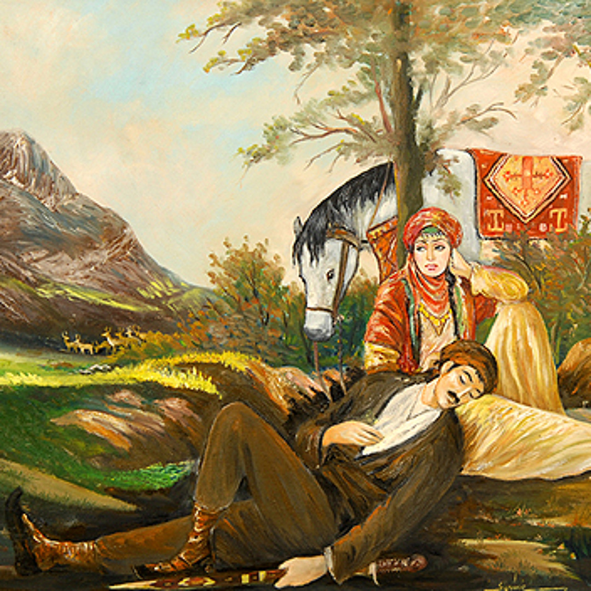

Siyabend, lawikekî belengaz, û Xecê, keça mîrekî, hevdu hez dikin. Ev çîroka evîna wan, azadiyê û berxwedanê ye.
Xecê dilê xwe bi Siyabend ve girêda, lê malbata wê ev evîn qebûl nekir. Her du ji bo ku bi hev re bimînin şertên dijwar derbas kirin. Çîrok bû nîşana evîna rastîn di çanda Kurdî de.